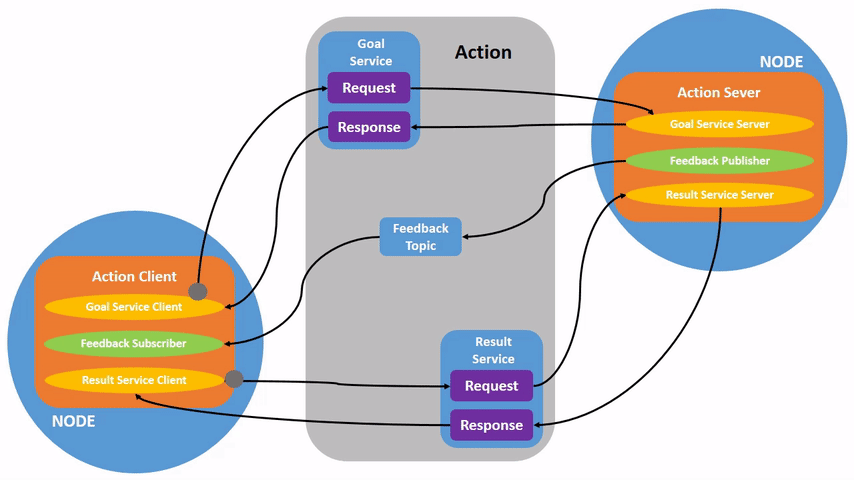

Understanding actions
Goal: Introspect actions in ROS 2.
Tutorial level: Beginner
Time: 15 minutes
Contents
Background
Actions are one of the communication types in ROS 2 and are intended for long running tasks. They consist of three parts: a goal, feedback, and a result.
Actions are built on topics and services. Their functionality is similar to services, except actions can be canceled. They also provide steady feedback, as opposed to services which return a single response.
Actions use a client-server model, similar to the publisher-subscriber model (described in the topics tutorial). An “action client” node sends a goal to an “action server” node that acknowledges the goal and returns a stream of feedback and a result.
Prerequisites
This tutorial builds off concepts, like nodes and topics, covered in previous tutorials.
This tutorial uses the turtlesim package.
As always, don’t forget to source ROS 2 in every new terminal you open.
Tasks
1 Setup
Start up the two turtlesim nodes, /turtlesim and /teleop_turtle.
Open a new terminal and run:
ros2 run turtlesim turtlesim_node
Open another terminal and run:
ros2 run turtlesim turtle_teleop_key
2 Use actions
When you launch the /teleop_turtle node, you will see the following message in your terminal:
Use arrow keys to move the turtle.
Use G|B|V|C|D|E|R|T keys to rotate to absolute orientations. 'F' to cancel a rotation.
Let’s focus on the second line, which corresponds to an action. (The first instruction corresponds to the “cmd_vel” topic, discussed previously in the topics tutorial.)
Notice that the letter keys G|B|V|C|D|E|R|T form a “box” around the F key on a US QWERTY keyboard (if you are not using a QWERTY keyboard, see this link to follow along).
Each key’s position around F corresponds to that orientation in turtlesim.
For example, the E will rotate the turtle’s orientation to the upper left corner.
{kind=link}
Pay attention to the terminal where the /turtlesim node is running.
Each time you press one of these keys, you are sending a goal to an action server that is part of the /turtlesim node.
The goal is to rotate the turtle to face a particular direction.
A message relaying the result of the goal should display once the turtle completes its rotation:
[INFO] [turtlesim]: Rotation goal completed successfully
The F key will cancel a goal mid-execution.
Try pressing the C key, and then pressing the F key before the turtle can complete its rotation.
In the terminal where the /turtlesim node is running, you will see the message:
[INFO] [turtlesim]: Rotation goal canceled
Not only can the client-side (your input in the teleop) stop a goal, but the server-side (the /turtlesim node) can as well.
When the server-side chooses to stop processing a goal, it is said to “abort” the goal.
Try hitting the D key, then the G key before the first rotation can complete.
In the terminal where the /turtlesim node is running, you will see the message:
[WARN] [turtlesim]: Rotation goal received before a previous goal finished. Aborting previous goal
This action server chose to abort the first goal because it got a new one. It could have chosen something else, like reject the new goal or execute the second goal after the first one finished. Don’t assume every action server will choose to abort the current goal when it gets a new one.
3 ros2 node info
To see the /turtlesim node’s actions, open a new terminal and run the command:
ros2 node info /turtlesim
Which will return a list of /turtlesim’s subscribers, publishers, services, action servers and action clients:
/turtlesim
Subscribers:
/parameter_events: rcl_interfaces/msg/ParameterEvent
/turtle1/cmd_vel: geometry_msgs/msg/Twist
Publishers:
/parameter_events: rcl_interfaces/msg/ParameterEvent
/rosout: rcl_interfaces/msg/Log
/turtle1/color_sensor: turtlesim/msg/Color
/turtle1/pose: turtlesim/msg/Pose
Service Servers:
/clear: std_srvs/srv/Empty
/kill: turtlesim/srv/Kill
/reset: std_srvs/srv/Empty
/spawn: turtlesim/srv/Spawn
/turtle1/set_pen: turtlesim/srv/SetPen
/turtle1/teleport_absolute: turtlesim/srv/TeleportAbsolute
/turtle1/teleport_relative: turtlesim/srv/TeleportRelative
/turtlesim/describe_parameters: rcl_interfaces/srv/DescribeParameters
/turtlesim/get_parameter_types: rcl_interfaces/srv/GetParameterTypes
/turtlesim/get_parameters: rcl_interfaces/srv/GetParameters
/turtlesim/list_parameters: rcl_interfaces/srv/ListParameters
/turtlesim/set_parameters: rcl_interfaces/srv/SetParameters
/turtlesim/set_parameters_atomically: rcl_interfaces/srv/SetParametersAtomically
Service Clients:
Action Servers:
/turtle1/rotate_absolute: turtlesim/action/RotateAbsolute
Action Clients:
Notice that the /turtle1/rotate_absolute action for /turtlesim is under Action Servers.
This means /turtlesim responds to and provides feedback for the /turtle1/rotate_absolute action.
The /teleop_turtle node has the name /turtle1/rotate_absolute under Action Clients meaning that it sends goals for that action name.
ros2 node info /teleop_turtle
Which will return:
/teleop_turtle
Subscribers:
/parameter_events: rcl_interfaces/msg/ParameterEvent
Publishers:
/parameter_events: rcl_interfaces/msg/ParameterEvent
/rosout: rcl_interfaces/msg/Log
/turtle1/cmd_vel: geometry_msgs/msg/Twist
Service Servers:
/teleop_turtle/describe_parameters: rcl_interfaces/srv/DescribeParameters
/teleop_turtle/get_parameter_types: rcl_interfaces/srv/GetParameterTypes
/teleop_turtle/get_parameters: rcl_interfaces/srv/GetParameters
/teleop_turtle/list_parameters: rcl_interfaces/srv/ListParameters
/teleop_turtle/set_parameters: rcl_interfaces/srv/SetParameters
/teleop_turtle/set_parameters_atomically: rcl_interfaces/srv/SetParametersAtomically
Service Clients:
Action Servers:
Action Clients:
/turtle1/rotate_absolute: turtlesim/action/RotateAbsolute
4 ros2 action list
To identify all the actions in the ROS graph, run the command:
ros2 action list
Which will return:
/turtle1/rotate_absolute
This is the only action in the ROS graph right now.
It controls the turtle’s rotation, as you saw earlier.
You also already know that there is one action client (part of /teleop_turtle) and one action server (part of /turtlesim) for this action from using the ros2 node info <node_name> command.
4.1 ros2 action list -t
Actions have types, similar to topics and services.
To find /turtle1/rotate_absolute’s type, run the command:
ros2 action list -t
Which will return:
/turtle1/rotate_absolute [turtlesim/action/RotateAbsolute]
In brackets to the right of each action name (in this case only /turtle1/rotate_absolute) is the action type, turtlesim/action/RotateAbsolute.
You will need this when you want to execute an action from the command line or from code.
5 ros2 action info
You can further introspect the /turtle1/rotate_absolute action with the command:
ros2 action info /turtle1/rotate_absolute
Which will return
Action: /turtle1/rotate_absolute
Action clients: 1
/teleop_turtle
Action servers: 1
/turtlesim
This tells us what we learned earlier from running ros2 node info on each node:
The /teleop_turtle node has an action client and the /turtlesim node has an action server for the /turtle1/rotate_absolute action.
6 ros2 interface show
One more piece of information you will need before sending or executing an action goal yourself is the structure of the action type.
Recall that you identified /turtle1/rotate_absolute’s type when running the command ros2 action list -t.
Enter the following command with the action type in your terminal:
ros2 interface show turtlesim/action/RotateAbsolute
Which will return:
# The desired heading in radians
float32 theta
---
# The angular displacement in radians to the starting position
float32 delta
---
# The remaining rotation in radians
float32 remaining
The first section of this message, above the ---, is the structure (data type and name) of the goal request.
The next section is the structure of the result.
The last section is the structure of the feedback.
7 ros2 action send_goal
Now let’s send an action goal from the command line with the following syntax:
ros2 action send_goal <action_name> <action_type> <values>
<values> need to be in YAML format.
Keep an eye on the turtlesim window, and enter the following command into your terminal:
ros2 action send_goal /turtle1/rotate_absolute turtlesim/action/RotateAbsolute "{theta: 1.57}"
You should see the turtle rotating, as well as the following message in your terminal:
Waiting for an action server to become available...
Sending goal:
theta: 1.57
Goal accepted with ID: f8db8f44410849eaa93d3feb747dd444
Result:
delta: -1.568000316619873
Goal finished with status: SUCCEEDED
All goals have a unique ID, shown in the return message.
You can also see the result, a field with the name delta, which is the displacement to the starting position.
To see the feedback of this goal, add --feedback to the ros2 action send_goal command:
ros2 action send_goal /turtle1/rotate_absolute turtlesim/action/RotateAbsolute "{theta: -1.57}" --feedback
Your terminal will return the message:
Sending goal:
theta: -1.57
Goal accepted with ID: e6092c831f994afda92f0086f220da27
Feedback:
remaining: -3.1268222332000732
Feedback:
remaining: -3.1108222007751465
…
Result:
delta: 3.1200008392333984
Goal finished with status: SUCCEEDED
You will continue to receive feedback, the remaining radians, until the goal is complete.
Summary
Actions are like services that allow you to execute long running tasks, provide regular feedback, and are cancelable.
A robot system would likely use actions for navigation. An action goal could tell a robot to travel to a position. While the robot navigates to the position, it can send updates along the way (i.e. feedback), and then a final result message once it’s reached its destination.
Turtlesim has an action server that action clients can send goals to for rotating turtles.
In this tutorial, you introspected that action, /turtle1/rotate_absolute, to get a better idea of what actions are and how they work.
Next steps
Now you’ve covered all of the core ROS 2 concepts. The last few tutorials in the “Users” set will introduce you to some tools and techniques that will make using ROS 2 easier, starting with Using rqt_console to view logs.